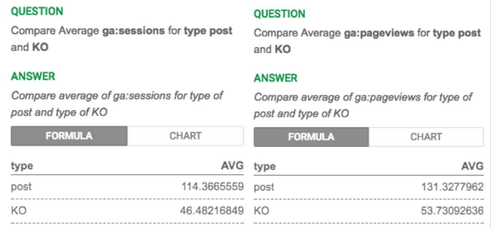
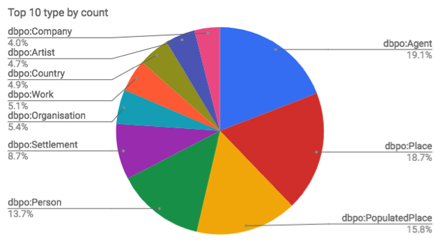
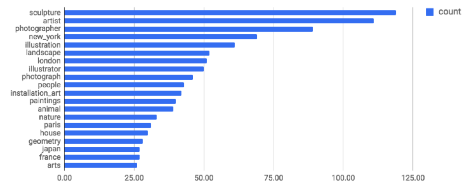

In this research paper, we present the results of the analysis conducted on Freeyork.org, a design blog from Poland that has been
using WordLift, a plugin for WordPress, for a period of 6 months to
automatically add the semantic markup for improving its online
visibility.
WordLift
1
analyses articles using Named Entity Recognition
(NER) and Named Entity Disambiguation (NED). The entities are ex-tracted from different knowledge graphs including but not limited
to DBpedia, GeoNames and Wikidata. WordLift provides UIs for
creating and curating custom vocabularies. The plugin implements
a semi-automated annotation workflow and publishes metadata by
asynchronously injecting a JSON-LD
2
on-page and by publishing
linked (open) data in the cloud using Apache Marmotta: an open implementation of a Linked Data Platform
3
. Metrics used to measure
the impact of structured data are based on organic search results
as opposed to paid links (i.e. advertisement), that is to
measure
the position of a web site in the search results solely based
on the ranking of the web site related to the search terms
entered by the end user. So that a user entering a web site from
an organic search result is considered an organic session and the
traffic generated by this user is defined as organic traffic (vs. paid
traffic, i.e. traffic generated by a sponsored or advertised link).
In this analysis, we used Google Analytics to collect and analyze
traffic data, over the course of 6 months and we could see that
linked structured data helps semantic search engines like Google
provide better results to their users and indirectly improves the
traffic of a website. This has been measured by comparing both
quantitative metrics like pageviews and sessions and qualitative
metrics like time spent on page and session duration.
Our goal was to measure organic traffic (page views and sessions)
and engagement (time spent on the pages and number of page-
views per session) considered as key performance indicators for the website. Since Freeyork.org has an advertising based business
model, organic traffic is crucial to drive revenues.
Here follow the highlights:
After the first three months
WordLift improved the number of organic sessions and the number of new users
with a double digit growth
(+ 12.13% of new users).
Google seems to be faster, compared to Bing and Yandex, in indexing and promoting articles that use WordLift’s
semantic markup
. In the first three months we have seen
a 18.47% increase of sessions from Google, comparing with
the previous period. Other search engines like Bing and
Yandex have also provided more visits to the articles but
only after the second and third month of activity.
On average,
pages enriched with WordLift
(featuring
the schema.org markup that the software provides), compared with all the other pages,
are performing 2.4 times
better
in terms of page views and in terms of sessions.
The average time spent on enriched articles is also
improved by 17.3%
in comparison to the rest of the website that is not annotated.
The average session duration is improved by 13.75%
when articles are enriched.
A glossary of terms, like the one that WordLift automatically creates, has a p
ositive impact in extending the
length of users’ sessions
but has little or no impact on
search traffic unless content is original and curated.
Introduction – What we learned
When creating a SaaS like WordLift whose mission is to automate
digital marketing tasks and to improve the visibility of websites,
testing the product’s assumptions by looking at the web metrics
with a methodical approach, is an integral part of our product
development.
We have been focusing our effort in creating a semi-automated
workflow to improve the impact of organic traffic on websites, to
reduce the time spent by editors in enriching articles and to improve
the user experience of the readers thanks to meaningful navigation
widgets
[3]
.
As obvious as it might sound, not all websites are made equal
and, just like any other business, each website has its own unique
strengths and weaknesses. The following study focuses on a community driven blog from Poland accessible on the Internet as freeyork.org. The blog helps artists and designers promote and share
their stories and their artwork.
When analysing clients’ data our goal is twofold:
prove that our hypothesis are wrong (or right) in order to
improve WordLift
provide the client with actionable recommendations to
grow their business
Samur, co-founder and CEO of the news organization behind Freeyork, started using WordLift in January 2017 fito add intelligencefi to
his WordPress site and to cope with a decreasing amount of traffic
coming from search engines (organic sessions between October
2016 and December 2016, when compared to the previous three
months, had been constantly decreasing).
Methodology used and results
In
Figure 1
we’re looking at the traffic coming from the organic
search in the first 3 months after installing WordLift (January /
March 2017) compared to the previous period (October / December
2016).
Figure 1.
Sessions from organic search (orange = October /December 2016; blue = January / March 2017)
It is interesting to see that Google has been the fastest search
engine to boost the enriched content over its SERPs and to bring
new traffic to the site (we have seen an
increase of 18.47% for
traffic coming from Google
in the first three months). Yandex
and Bing started to contribute more after the second and the third
month.
Figure 2.
Percentage change of organic traffic between October - December 2016 and January - March 2017
The Page/Session ratio also increased slightly by a 1.96%. Freeyork is currently running with a WordLift configuration that automatically adds links on articles for every annotated occurrence of a detected named entity. This setting has been designed to drive more
traffic from articles to entity pages. Since entity pages have not
been curated by the team, the impact in terms of traffic has been
minimal (around 0.25% on the total in terms of pageviews).
Entities, unless curated, don’t attract organic traffic and their
impact on the user experience also remains low.
Now the main issue, in terms of insights that we could extract
from this analysis of the traffic, was that out of 13.500 pages indexed
by Google only 1.661 articles have been annotated and enriched
with WordLift. The annotation process has not been consistent, due
to the fact that some editors did use WordLift while others didnfit.
WordLift was used starting from January 2017 and in the beginning
only a small percentage of articles had been annotated. As the team
become more accustomed to the new workflow the percentage of
annotated articles increased. In May, June and July 2017 the team
produced 667 articles and yet only 363 (54.4%) have been annotated
with WordLift.
The vocabulary currently features 2.684 entities but, as said, the
impact in terms of traffic was minimal due to the fact that entities
have not been curated from the editorial point of view. WordLift
retrieves content for each entity using linked data graphs such as
DBpedia and Wikidata or other controlled vocabularies that the
client might decide to use. Content is meant to guide the editor in
personalizing each term; it can be done using WordPress just like
any other blog post.
Figure 3.
Annotated posts and Entity pages
We were curious to dive deeper into the data in order to understand how much the articles enriched with WordLift were really
contributing to the traffic of the website.
It was therefore decided to pull data from Google Analytics
and to combine it with data from <data.wordlift.io> (this is
the linked data platform where the linked knowledge graph of
Freeyork is stored). Using a SPARQL query we could extract the list
of the URLs of the annotated articles (they are marked up with the
property http://schema.org/BlogPosting) and the list of the
URLs of entities (their <rdf:type> - the class associated with each
named entity - is one of the types of the schema.org vocabulary
that WordLift supports
4
).
Using a VLOOKUP function on Google Spreadsheet we combined the two datasets and could finally see the performance of
the annotated articles in comparison with the rest of the website
for the following metrics: number of sessions, number of page
views, average time spent on page, average duration per session
and bounce rate.
We used the add-on of Google Analytics for Google Spreadsheet
5
. This is a precious tool but can only output 10.000 results at the
time. We therefore configured the Add-on to extract the top 10.000
pages sorted by number of sessions and by number of page views
(we wanted to run the analysis on the pages that had the biggest
impact on the website for the selected metrics); this could be done
in our case by adding -ga:sessions, -ga:pageviews in the sort
field of the configuration panel of the Google Analytics Add-On.
We focused on pageviews and sessions after the talks that we
had with Samur as these are the metrics that he cares the most: the
magazinefis revenues are driven primarily by advertising.
We wanted to look this time at the overall traffic of the website
and not just at the organic portion of it. We also looked at a different
time frame (the period from April to June) to ensure that results
from WordLift remained consistent over time.
Measuring the impact of enriched articles
The impact on all key metrics for enriched articles - compared to
the rest of the website - has been positive and rewarding for the
team at Freeyork and of course for us as well.
In the results below post is used for pages enriched with WordLift
and KO is used for any other page that have not been enriched with
WordLift. The formulas being used to extract the averages below
aggregate all values for each type (post and KO) related to each metric. The analyzed metrics are: sessions (ga:sessions), pageviews
(ga:pageviews), average time on page (ga:avgTimeOnPage) and
bounce rate (ga:bounceRate). More information on how Google
Analytics aggregates data and a definition of each metric is available on the online documentation provided by Google Analytics
documentation
6
.

Figure 4.
Average sessions and pageviews
Figure 5.
Average time on page and bounce rate
Few more insights from this study and how to help Wordlift become an even better SEO tool
Structure is more important than we might think. In RankBrain’s
era ensuring the best user experience to humans is key to
stand out on Search pages. The more we are able to
provide consistency to our readers by organizing content around the concepts that matters
and the more
the dwell time on our site increases. At the same time, content curation is costly and editors need to focus their
attention to core entities only. Out of the 2.684 entities a list
of the most interconnected entities can help us understand
what wefire talking about and where editors should put
their focus in the next future. These entities are the ones
that have the highest number of relationships with both
articles and other entities in the graph of the website that
WordLift creates. We usually rely on the DBpedia ontology
to gain a first insight on the content of website by looking
at the different types of entities that a blog is using. As
shown in the chart below we could see that people, namely
designers, play a central role in Freeyork.

Figure 6.
Most used entities organized by type (DBpedia Ontology)
(dbpo:Agent, dbpo:Person, dbpo:Artist) followed by
the places where artists work and exhibit (dbpo:Place,
dbpo:PopulatedPlace, dbpo:Settlement, dbpo:Country)
and at last the organizations they deal with (dbpo:Organization
and dbpo:Company) and the artwork that they produce
(dbpo:Work). This is a good starting point that we can augment further by looking at the top 20 entities of the website.

Figure 7.
Most recurring entities
This list of interconnected entities is still quite raw and
could be further cleaned and refined; nevertheless, even
without adding more details to it, this data can help us see
that: photography, sculpture, illustration, art installations
and paintings are the most important clusters to group
artists and designers on the Freeyork website. Tools like
WordLift shall bring this data into the hands of bloggers
and editorial teams to help them focus on writing content
that fits within their existing editorial plan.
As editors focus their effort on the most important concepts
in their vocabulary we can probably expect more traffic
coming to entities pages. We can also, at that point, start to
increase the average session duration
even more (assuming that this fits with the business goals of the website)
by adding navigation widgets such as the navigator and
the faceted search widget. These widgets in WordLift complement with the links that WordLift adds to drive users
from articles to entity pages and are designed to improve
the time a user spends on your website before moving
somewhere else (this metric is tightly connected with the
concept of dwell time). In the charts below we can see
how WordLift’s articles, while keeping users slightly more
time on each page, tend also to extend the duration of the
session. More internal links help readers discover more
content on the website and have indirectly a positive impact on search engine rankings. We assume that by adding
navigation widgets to a website like Freeyork this effect
can be boosted.
Figure 8.
Average time spent on page and duration of thesession for not enriched pages
Figure 9.
Average time spent on page and duration of thesession for enriched articles
A lot of pages - on large websites - donfit get much traffic or
donfit get traffic at all.
Pruning content in some cases
is a good option to ensure that your visitors, both humans and machines, really get the best of your site
at their first encounters
. When pruning is not an option
(you need to have time and resources to do a comprehensive content audit) - we can at least ensure that crawlers
donfit waste their time on indexing content that is not
strategic for your website. Letfis be more specific: while
itfis true that publishing more relevant content around a
particular topic improves your ranking for that topic, sometimes therefis actually more value in keeping certain pages
on your website out of a search engine’s index. When
pages are not high-quality, when they are not properly
curated and they donfit have clear call to actions - they can
still be helpful for readers trying to get a clue of an article
- but might not perform well over search. In these specific
cases -
adding a noindex and tell search engines to
turn away from these pages can improve the overall
authority and rankings of the website.
In the upcoming releases, and specifically for entity pages, WordLift
shall automatically decide when it makes sense to add a noindex
tag to ensure that websites like Freeyork.org can always get the
best out of organic
7
.
Conclusions
Now more than ever, as we transition from keywords-based searches
to semantic searches it has become critical for online magazines,
bloggers and digital publishers, to improve the enriched metadata
on their sites to maintain and to grow their online visibility. To
achieve this target, WordLift adds a layer of semantic annotations
that improve the crawlability and findability of web pages. The
rationale is straightforward: implementing schema.org annotations
helps search engines understand the content better, and provides
better results for end users
[2]
.
Our on-going effort in evaluating the impact of Linked Data
technologies in search is strategic asset in our companyfis culture
and a great way to establish a virtuous feedback loop with our early
users.
As next steps we plan to extend the present methodology in
order to analyze how the impact of a tool like WordLift varies over
time for a given set of articles and to implement new functionalities
into the product for helping editors write more consistently around
the topics that really matter and for automating additional SEO
tasks (such as adding the noindex tag).
About WordLift
WordLift
8
is an Italian startup incorporated in January 2017 that
commercializes the first semantic plug-in for WordPress. WordLift
uses natural language processing and linked data publishing for
automating structured data markup. The startup, after several years
of research and development
[1]
, received its first seed funding
round on March 2017 by WooRank, a Belgian leading SEO and
digital marketing service provider.
Acknowledgements
This work would have never been possible without the great support
of the team at Freeyork.org and their valuable traffic data.
References
Patrick Aichroth, Christian Weigel, Thomas Kurz, Horst Stadler, Frank Drewes,
Johanna Bj örklund, Kai Schlegel, Emanuel Berndl, Antonio Perez, Alex Bowyer,
and Andrea Volpini. 2015. MICO - Media in Context. In 2015 IEEE International
Conference on Multimedia & Expo Workshops, ICME Workshops 2015, Turin, Italy,
June 29 - July 3, 2015. 1–4. https://doi.org/10.1109/ICMEW.2015.7169827.
Raphael Troncy Thomas Steiner and Michael Hausenblas. 2010. How Google
is using Linked Data Today and Vision For Tomorrow. In Proceedings of the
Workshop on Linked Data in the Future Internet at the Future Internet Assembly
(LDFI-2010). CEUR, Ghent, Belgium.
Andrea Volpini and David Riccitelli. 2015. WordLift: Meaningful Navigation
Systems and Content Recommendation for News Sites running WordPress. In
Proceedings of the ESWC Developers Workshop 2015 co-located with the 12th Extended Semantic Web Conference (ESWC 2015), Portoroˇz, Slovenia, May 31, 2015.
20–22. http://ceur-ws.org/Vol-1361/paper4.pdf
Footnotes
Novel Semantic Tagging tool to benefit Digital Journalism
. CORDIS. June 2016.
[back]
Google
Analytics Add on for Google Spreadsheet documentation
https://developers.google.com/analytics/solutions/google-analytics-spreadsheet-add-
on
[back]